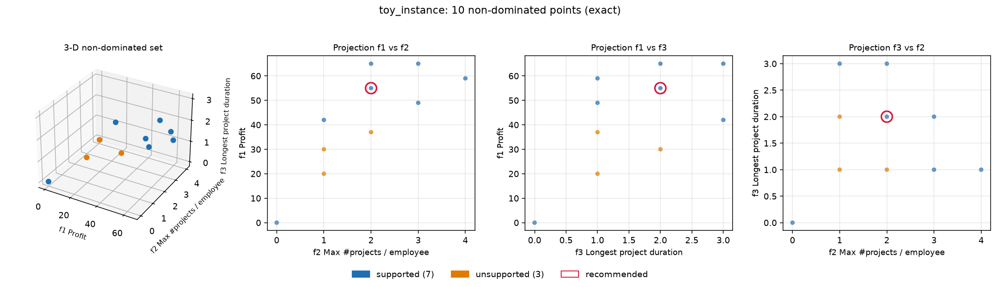
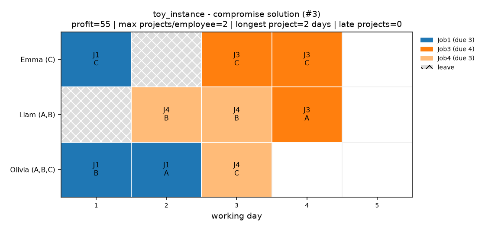
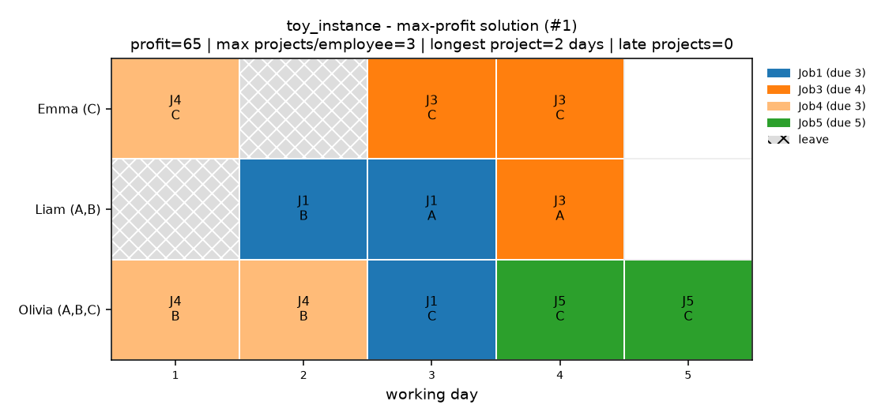
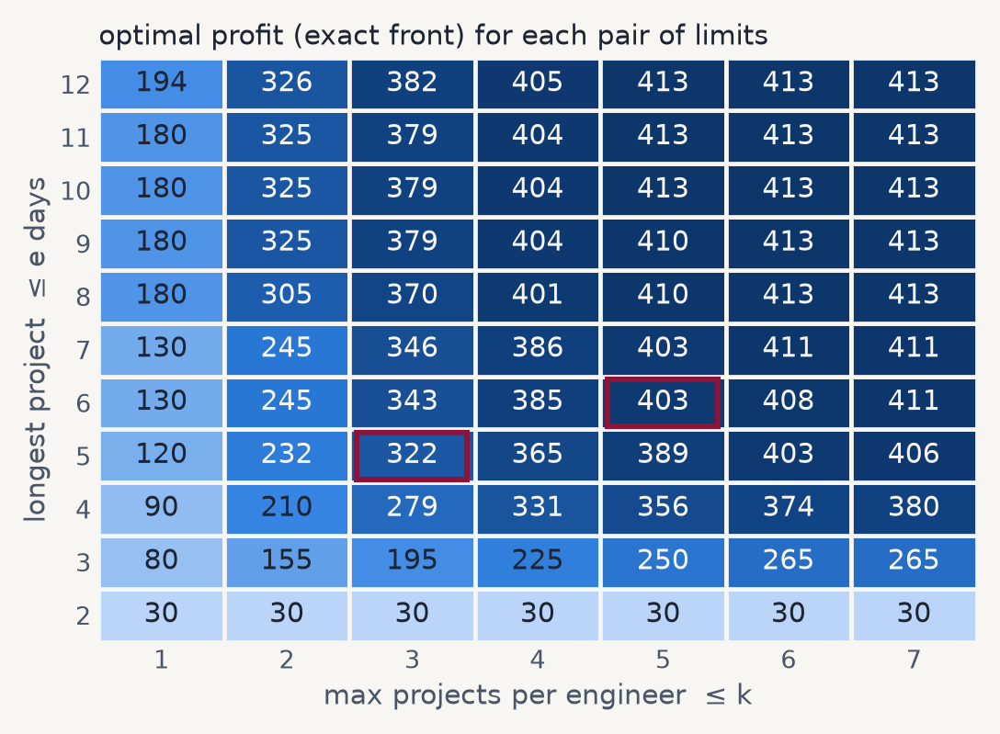
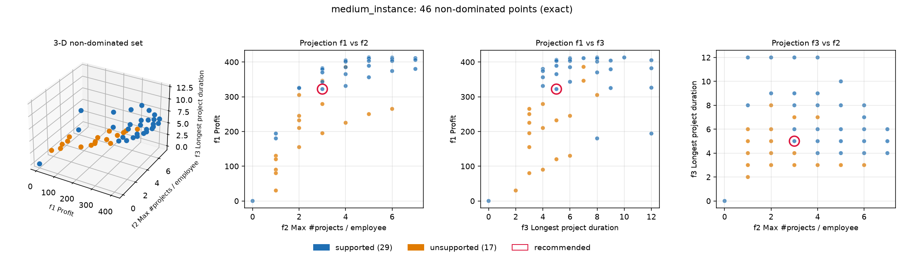
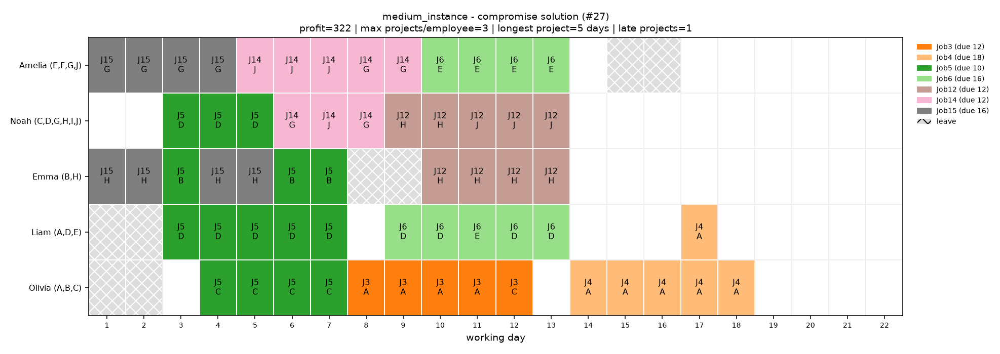
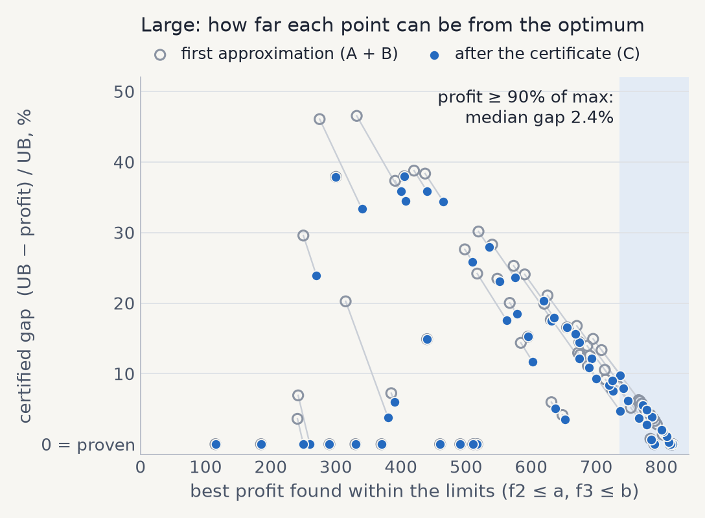
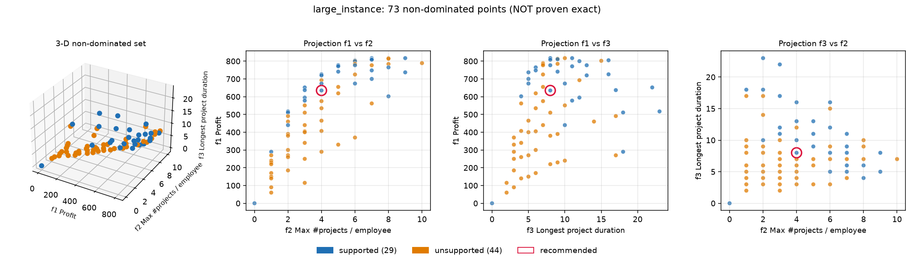
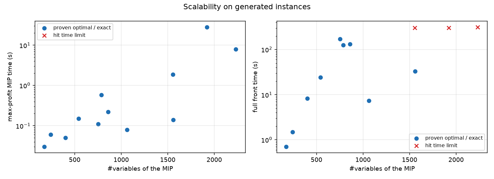

github.com/Othmane197/DMPCompuOpti assigns engineers to client projects over a horizon of \(H\) working days. Each engineer holds some qualifications and has leave days; each project needs a number of person-days per qualification, earns a gain if it is completed within the horizon and pays a daily penalty for every day it finishes after its due date. A schedule assigns each engineer-day either to one (project, qualification) pair or to nothing. The subject imposes five rules: qualification, daily uniqueness (one project and one qualification per engineer and day), leave, coverage (a project counts as completed only if every qualification requirement is fully covered) and execution uniqueness (a project is executed at most once).
{{INSTANCE_TABLE}}Demand exceeds capacity on every instance (last columns of Table 1): even with perfect flexibility, {{UNDOABLE_RANGE}} of the requested work cannot be done. Choosing which projects to complete is therefore part of the decision, exactly as the subject anticipates (“bearing in mind that not all projects can always be staffed”). A project can be completed late, but only inside the horizon; the data say nothing about work after day \(H\).
| Symbol | Meaning |
|---|---|
| \(T=\{1,\dots,H\}\) | working days of the horizon |
| \(S,\ Q,\ J\) | staff members, qualifications, projects |
| \(Q_s\subseteq Q\) | qualifications of staff member \(s\) |
| \(V_s\subseteq T\) | leave days of \(s\) |
| \(n_{jq}\in\mathbb{N}\) | person-days of qualification \(q\) required by project \(j\); \(Q_j=\{q: n_{jq}>0\}\) |
| \(G_j,\ d_j,\ c_j\) | gain, due date and daily lateness penalty of project \(j\) |
| \(\mathcal{A}\) | admissible assignments: \(\{(s,j,q,t): q\in Q_s\cap Q_j,\ t\in T\setminus V_s\}\) |
| Variable | Domain | Interpretation |
|---|---|---|
| \(x_{sjqt}\) | \(\{0,1\}\), \((s,j,q,t)\in\mathcal{A}\) | 1 if \(s\) works on qualification \(q\) of project \(j\) on day \(t\) (the schedule itself) |
| \(y_j\) | \(\{0,1\}\), \(j\in J\) | 1 if project \(j\) is completed within the horizon |
| \(z_{sj}\) | \(\{0,1\}\) | 1 if \(s\) works at least one day on \(j\) |
| \(b_{jt}\) | \(\{0,1\}\), \(t\in T\) | 1 if \(j\) has begun on or before day \(t\) (code: st) |
| \(e_{jt}\) | \(\{0,1\}\), \(t\in T\); \(e_{j0}:=0\) | 1 if \(j\) has ended on or before day \(t\) (code: fi) |
| \(u_j\) | \(\{0,1\}\) | 1 if \(j\) is completed after its due date |
| \(P,\ D\) | \(\mathbb{Z}_{\ge 0}\) | max number of projects per employee; max project duration |
The qualification and leave rules hold by construction: a variable \(x_{sjqt}\) is only created when \(s\) has \(q\), \(j\) needs \(q\) and \(t\) is not a leave day of \(s\). This also removes most of the variables (Table 1, last column).
The number of days project \(j\) is late is the linear expression \(\;L_j=\sum_{t=d_j+1}^{H}\big(y_j-e_{j,t-1}\big)\): the days after the due date on which a completed project has not yet ended.
f2 and f3 are “min–max” readings: they protect the worst-off engineer and the longest project. Sums (total projects per engineer, total duration) are equally defensible and would give a different front; the code can be switched by changing one expression. The search uses three criteria at a time (f1, f2, f3 by default); f4 is computed and reported for every solution and can replace f2 or f3 (§5.4).
formulation="step"|"bigm").A schedule \(a\) dominates \(b\) if it is at least as good on every criterion and strictly better on one; the non-dominated set (Pareto front) contains every schedule that no other schedule dominates. A non-dominated point is supported if it optimises some weighted sum of the criteria with strictly positive weights, and unsupported otherwise. With integer variables, unsupported points exist and are invisible to any weighted-sum method (MOCO lecture). On our two exact fronts they are {{TOY_UNSUP}} of {{TOY_N}} (toy) and {{MED_UNSUP}} of {{MED_N}} (medium) points (§5), which rules out the weighted-sum approach.
Profit is kept as the objective and f2, f3 become upper bounds \(k\) and \(\varepsilon\), swept downwards. Each sub-problem returns the lexicographic optimum (max f1, then min f3, then min f2), so that it never returns a weakly dominated point:
F ← ∅ ; k ← |J| # bound on f2
while k ≥ 0:
ε ← H ; m ← -1 # bound on f3 ; largest f2 seen at this level
while ε ≥ 0:
p ← lex-opt( max f1, min f3, min f2 ) s.t. f2 ≤ k, f3 ≤ ε # warm start from F
if no feasible schedule: break
F ← F ∪ {p} ; m ← max(m, f2(p))
ε ← f3(p) − 1 # ask for something strictly shorter
if m < 0: stop
k ← min(k, m) − 1 # level skipping
return the non-dominated points of F
--lex sequential mode solves profit, then f3, then f2, freezing each value.--step safe lowers \(\varepsilon\) by one only (keeps coverage); --step jump jumps below the value found (fast, for fronts that are approximate anyway). The result records whether every solve was proven ("exact" flag).For each front point \(p\) a small LP searches for weights \(\lambda\ge\delta\), \(\sum_i\lambda_i=1\), such that \(\lambda\cdot(p-q)\le 0\) for every other front point \(q\) (criteria normalised to \([0,1]\), all in minimisation form), maximising \(\delta\); \(p\) is supported iff \(\delta^*\gt 0\). On an exact front this is the true status; on an approximate front it is relative to the points found.
The method delivers a menu; choosing is the decision maker's role. As a neutral starting point the code highlights the point minimising the weighted Tchebychev distance to the ideal point with equal weights (criteria scaled between ideal and nadir, empty schedule excluded). Equal weights are an arbitrary choice, not a model of Margaux's preferences: the natural next step is preference elicitation, e.g. asking her to rank a few front schedules and fitting an additive value model with UTA (course), which we did not do.
Python 3.11 + Gurobi 13.0.3 (academic licence), about {{LOC}} lines of code:
| File | Role |
|---|---|
src/models/gurobi_model.py | MILP (switch and big-M variants), ε bounds, lexicographic solves, warm start, independent evaluator and feasibility checker |
src/algorithms/epsilon_constraint.py | ε-constraint with level skipping, time budgets, exactness flag, checkpoint/resume |
src/algorithms/pareto.py | dominance, non-dominated filter, supported/unsupported LP |
src/visualization/plots.py | objective space (3-D + three 2-D projections) and decision space (timetable) |
src/generator.py, benchmark.py | instance generator; scalability study |
run_pareto.py, certify_front.py | front of one instance (+ merge of runs); quality certificate of an approximate front |
Trust. (1) Every schedule is re-checked by code that ignores the solver (skills, leave, one task per day, exact coverage); a run refuses to save a schedule that fails. (2) All criteria are recomputed from the timetable, not read from solver variables. (3) Nine automated tests pass, including: toy maximum profit = 65; the checker catches deliberate violations; every pair of toy front points is mutually non-dominated; the generator never creates impossible projects; resuming from a checkpoint gives the same front.
All timings are single runs on one 8-thread laptop; medium and large ran in parallel (4 threads each), so read them as orders of magnitude.
{{TOY_N}} non-dominated schedules, {{TOY_SOLVES}} MIP solves, under a second, every solve proven optimal.
{{TOY_TABLE}}Reading it: going from 65 to 55 drops Job5 (gain 10), but then no engineer works on more than 2 projects and no project lasts more than 2 days. Points #6–#8 are unsupported: a weighted sum would never show them. The empty schedule is always non-dominated (nothing beats 0 projects and 0 days); it is kept for completeness and excluded from recommendations.



{{MED_N}} non-dominated schedules ({{MED_SUP}} supported, {{MED_UNSUP}} unsupported), {{MED_SOLVES}} MIP solves, {{MED_MIN}} minutes in total; every solve was proven optimal (300 s limit per solve, never reached; median {{MED_MEDIAN}} s, slowest {{MED_SLOWEST}} s).
{{MED_KEYROWS}}What it tells the CEO. Each limit alone is cheap down to a point: projects ≤ 5 days costs 7 of 413 (1.7%), engineers on ≤ 4 projects costs 8 (1.9%). Below that, losses grow fast (3-day projects cost over a third of the profit, one project per engineer half). But limits interact: imposing both of the cheap limits at once costs 48 (365, −11.6%), whereas ≤ 6-day projects with ≤ 5 projects per engineer still earn 403 (−2.4%). Figure 4 gives the optimal profit for every pair of limits: this table is the menu the decision maker chooses from, and on an exact front every entry is a proven optimum.



Here the sub-problems can no longer be proven optimal within a minute, so the front is an approximation: every schedule is feasible and checked, but better trade-offs may exist. We ran two strategies (A, B) and merged them; then a third run (C) measured how far each point can be from the truth and replaced the points it could improve.
{{LARGE_RUNS}}A separate profit-only solve proved the maximum profit is 817 in 13 s. The weighted run (A) stopped at 811: the combined objective is much harder to prove than profit alone, which motivated the sequential mode (B), which found 817 immediately.
{{LARGE_CERT}}
The shape is the same as on medium: flat for loose limits, collapsing for tight ones. These are profits found, i.e. lower bounds on the best achievable, so every loss shown is an upper bound on the true loss.

The code accepts any two of f2, f3, f4 as bounded criteria. On the toy instance the late-projects criterion barely conflicts with profit: the maximum profit (65) is already reached with no late project.
{{TOY_F4_TABLE}}The generator reproduces the structure of the given instances (gains, 3/day penalty, 1–3 skills per project, ~10% leave, demand/capacity 1.3 by default) and guarantees that every required skill exists in the team. We generated 6 sizes × 2 seeds and timed the max-profit solve (120 s limit) and the full front (30 s per solve, 300 s budget per front).
{{BENCH_TABLE}}
Findings. Maximum profit alone stays easy (proven on all 12 instances, at most 28 s). The full front is what gets hard: every front with up to about 1,000 variables was exact within 5 minutes; from about 1,500 variables, 3 of 4 fronts exhausted the budget. Two instances of the same size can differ by a factor of 18 in time, so two seeds per size show where it stops being easy, not a scaling law.
| Medium instance, same question | Big-M | Switch (b, e) |
|---|---|---|
| max f1, then min f2, then min f3 | not proven (120 s limit) | proven, 40 s |
| max f1, then min f3, then min f2 | not proven (120 s limit) | proven, 57 s |
| Medium instance, same question | 3 successive solves | 1 weighted solve |
|---|---|---|
| max f1, then f2, then f3 | 40 s | 24 s |
| max f1, then f3, then f2 | 57 s | 12 s |
| same, with f2 ≤ 3 and f3 ≤ 6 | not proven, 192 s | proven, 63 s |
A compact time-indexed MILP, in which the “begun/ended” switches replace big-M constraints, makes each sub-problem tractable, and an ε-constraint sweep with lexicographic sub-problems computes the complete non-dominated set, unsupported points included, whenever the solver can prove optimality. That is the case on the toy and medium instances, which yields exact trade-off tables a decision maker can read directly (on medium, ≤ 5-day projects alone or ≤ 4 projects per engineer alone each cost under 2% of profit, but imposing both costs 11.6%, while ≤ 6-day projects with ≤ 5 projects per engineer together cost 2.4%). On the large instance we deliver the best trade-offs found together with a per-point upper bound, which is the honest form of an approximate answer. The certificate also taught us something: a time-limited run can return a front that looks complete while most of its points are dominated, so an approximate front should not be reported without such bounds. The natural continuations are a dedicated heuristic for large instances and a preference-elicitation step to turn the menu into a recommendation.
pip install -r requirements.txt # gurobipy 13.0.3 + academic licence, matplotlib, pytest
python -m pytest -q tests # 9 tests, ~5 s
python run_pareto.py data/toy_instance.json # < 1 s
python run_pareto.py data/medium_instance.json --time-per-solve 300 --threads 4 # ~53 min
python run_pareto.py data/large_instance.json --time-per-solve 60 --total-time 5400 --step jump --threads 4
python run_pareto.py data/large_instance.json --lex sequential --time-per-solve 60 --total-time 3600 --step jump --threads 6
python run_pareto.py data/large_instance.json --merge results/large results/large_sequential
# writes results/large_merged; we copied it to results/large_merged_before_certify (input of the certificate)
python certify_front.py data/large_instance.json results/large_merged_before_certify --time-per-solve 120 --level 1 --global-ub 817
# ~2 h; replays instantly from results/large_certify/certificate.jsonl
python run_pareto.py data/large_instance.json --merge results/large results/large_sequential results/large_certify
python run_pareto.py data/toy_instance.json --secondary max_projects late_projects
python benchmark.py # ~24 min
python docs/slides/make_slide_figures.py # Figures 4 and 7
python docs/report/build_report.py # rebuilds this report from results/
Each run writes to results/<instance>/: the front (CSV, and JSON with every timetable), the objective-space and timetable figures, and summary.json whose "exact" field states whether the front is proven complete.